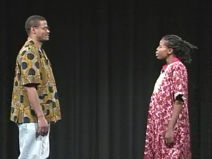

|

|
RATIBA
YA SIKU (DAILY SCHEDULE) Pili: Hujambo Musa? Musa: Sijambo, habari za leo? Pili: Nzuri. Habari za nyumbani? Musa: Salama tu. Wewe utafanya nini kesho? Pili: Mimi sitafanya vitu vingi. Mimi nitaamka saa kumi na mbili kamili asubuhi. Nitasafisha nyumba saa kumi na mbili na nusu. Nitatayarisha chamshakinywa saa moja na robo asubuhi, na nitakula chamshakinywa saa moja na nusu asubuhi. Nitakwenda kazini saa mbili kasoro robo asubuhi, na nitarudi nyumbani saa kumi kasoro dakika ishirini mchana. Musa: Mimi nitaamka saa kumi na mbili na nusu asubuhi. Nitatayarisha chamshakinywa saa moja kamili asubuhi. Nitakula chamshakinywa saa moja na nusu asubuhi. Mimi nitakwenda kazini saa mbili kasoro dakika kumi asubuhi. Nitarudi nyumbani saa kumi na moja kasorobo alasiri. |
© African Studies Institute, University of Georgia.